第一天 / Token学院 · 从剧本和资产到可生成的视频 · 01/02 | 全课 01/54
TOKEN学院 · 第一天
从剧本和资产到可生成的视频
把前几天完成的剧本和视觉资产接入视频生成：先定镜头与参考，再选生成方式、平台和模型；按七项检查提示词，生成后对照剧本检查、修改，并完成对应故事板。
三种生成方式七步生成流程七项提示词两轮生成与课程 Skill故事板与作业
本日成果：每位学员用前几天完成的剧本和资产，完成一段约 15–30 秒视频；能说明生成方式选择、用七项提示词检查，并交一份对应的可视化故事板。
第一天 / Token学院 · 从剧本和资产到可生成的视频 · 02/02 | 全课 02/54
学习标记与本日教学目标
用三个学习标记区分需要记住、理解和跟做的内容。
【必记】课后能说出来、能照着做的判断或流程。
【看懂即可】了解概念与用途，不要求背型号、参数或术语。
【现场跟做】跟讲师完成一次操作，留下提示词、参考素材和视频结果。
- 说清视频生成在课程流程中的位置：把剧本和资产变成动态片段。
- 区分文生、图生、全能参考，并按手头素材和镜头目标选择。
- 记住生成流程，区分平台、模型、提示词辅助工具和课程 Skill。
- 用七项检查提示词，声音按需补充。
- 完成提示词辅助、两轮生成、课程 Skill 跟做，产出约 15–30 秒视频。
- 把自己的剧本画成多格故事板。
第一天 / Token学院 · 开场衔接 · 01/01 | 全课 03/54
开场衔接｜让前期准备动起来
前几天的剧本、人物与场景资产，是今天视频生成的起点。今天练习把“观众应看到什么”转成可执行的素材和视频提示词。
导演思维先明确这一镜的表达意图，再选择合适参考与生成方式。工具负责执行，我们负责判断结果是否按剧本表达。
剧本 + 视觉资产 → 选择参考与生成方式 → 视频提示词 → 生成、检查、修改
今天围绕三个问题：人物图怎样进入视频？这一镜适合文字、图片还是多类参考？提示词需要交代哪些信息？
已有材料不是终点；今天让它们成为动态片段。
开场互动｜从熟悉的作品进入导演视角先从熟悉的电影、短剧和导演谈起，再把注意力转向镜头如何被组织。 想一想：你最喜欢哪部电影或短剧？有没有特别喜欢的导演？一部电影的拍摄流程大概有哪些环节？有哪些主要工作岗位？
从喜欢的作品出发，开始观察镜头和创作分工。
此处播放：开场重庆获奖文旅片。
前期准备｜剧本与视觉资产已就位
前几天已经完成剧本、导演思维、文字分镜拆解和人物、场景等视觉资产。 今天不是从零认识生视频，而是把已经准备的演员形象、场景、剧本、分镜和资产接到生成流程里。
今天要解决的三个问题把已有材料变成动态片段，先回答人物图如何进入视频、这一场戏选哪种方式、提示词要交代什么。
- 人物图怎样进入视频？
- 这一场戏适合文字生成、图片带动，还是组合多种参考？
- 提示词需要把哪些事情交代清楚？
第一天 / Token学院 · 视频由什么组成 · 01/01 | 全课 04/54
视频由什么组成｜输入与结果的关系
一段视频由明确的镜头任务、参考素材、提示词和生成设置共同形成。每一部分职责不同，生成结果还需要人工检查。
剧本镜头任务+视觉 / 声音参考+视频提示词+模型与设置→视频候选→检查修改
- 人物图：外观、服装与身份锚点。
- 场景图：空间结构、地点与主要陈设。
- 道具图：关键物件的外观与状态。
- 风格图：颜色、光线、材质和整体质感。
- 提示词：这一镜发生什么、动作怎样变化、镜头如何拍。
- 模型与设置：按平台支持处理输入、画幅、时长等。
参考素材管外观依据，提示词管这一镜的要求；模型生成候选，人来检查。
参考素材负责什么｜人物、场景、道具与风格参考素材提供画面外观依据；上传后还要说明每张图负责什么。
- 人物图：人物外观和服装。
- 场景图：空间、布置和环境。
- 道具图：关键物件外观。
- 风格图：色彩、光线或画面质感；不代表复制图中角色和故事。
视频提示词负责什么｜把时间写出来
视频提示词说明这一段如何发生、观众会看到什么。 图片提示词描述一个画面长什么样；视频提示词还要说明人物从什么状态开始、动作怎样经过、最后停在哪里，以及镜头是否移动、几秒内发生什么。
素材与提示词｜两边都要交代只有人物资产图，模型不知道下一步向哪边走；只写动作，也不知道人物和场景该沿用哪张图。
参考素材管外观依据；提示词管这一镜的要求；模型按平台支持的输入生成；人检查结果。
第一天 / Token学院 · 三种生成方式 · 01/07 | 全课 05/54
三种生成方式｜先看手头有什么
选择方式看三件事：手上有何种素材、这一镜要控制什么、当前入口支持什么。先判断控制目标，再选择方式。
| 手头情况 / 目标 | 方式 | 选择理由 |
|---|
| 还没有合适定图，先试想法或生成环境气氛 | 文生视频 | 从文字开始，不依赖已定人物场景图 |
| 有一张确认过的画面，要让它动起来 | 图生视频 | 以单张图作为画面依据 |
| 有多类参考，需要分别控制人物、环境、动作等 | 全能参考 | 在平台支持时组合多份参考并说明职责 |
没定图先试想法：文生。定了画面让它动：图生。多类参考要分别控制：全能参考。
三种生成方式｜同一场戏的三种选法同一场“女主在雨夜便利店吃关东煮”，控制目标不同，选择也不同。
- 先试想法、暂时没有定图：文生视频。
- 已有女主坐在便利店吃关东煮的定稿图，只让画面动起来：图生视频。
- 要锁定女主外形、便利店环境、关东煮，并呈现挑、买、吃：全能参考。
先看要控制什么，再看手头参考和平台支持。
文生视频｜适合先试想法
文生视频主要从文字开始，不依赖已经定稿的人物或场景图。 可先试一个创意、生成空镜、环境气氛或转场。主角外形、服装和空间未必与既有资产一致。
图生视频｜先检查原图
图生视频把确认过的一张画面作为依据，再描述动作或镜头变化。 生成前检查人物脸、手、道具和构图。原图有问题，模型可能把问题带进视频。
全能参考｜素材需要明确分工
在平台支持时组合图片、视频或声音参考，并逐份说明用途。 人物图负责身份和外形；场景图负责空间；道具图负责物件；风格图负责视觉气质。参考视频可用于动作、运镜、节奏或画面变化；参考音频用于声音或说话表现。
全能参考｜首帧、尾帧与多帧
首帧、尾帧或多帧可以进一步控制画面状态。 今天先建立概念；关键帧的细用放在后续提升内容。本日重点仍是三种基础生成方式。
第一天 / Token学院 · 三种生成方式 · 02/07 | 全课 06/54
文生视频｜先从文字试一镜
文生视频适合先试一个创意、生成空镜或气氛。主角外形未必与已定资产一致；案例用豆包里的 Seedance 2.0 Fast。
文生｜女主吃关东煮Seedance 2.0 Fast · 约 6–8 秒
文生提示词 · 完整可复制主体：女主，不补充外形细节。动作与表演：女主在雨夜的便利店孤独地吃关东煮，表演克制自然。场景与环境：雨夜的便利店，画面集中在女主吃关东煮这一场戏。镜头语言：以中近景固定镜头为主，可缓慢推近；少切镜，保持动作清楚。时间与节奏：约 6–8 秒，节奏舒缓；动作太多时先简化。光影与色调：店内灯光偏暖，窗外夜雨偏冷，呈现室内外冷暖对照。风格与质感：电影级三维短片质感（不是真人实拍、不是二次元）。声音（按需）：无对白；可保留轻微环境声。
观察动作是否清楚、人物是否符合预期、镜头是否保持简单。
第一天 / Token学院 · 三种生成方式 · 03/07 | 全课 07/54
文生视频｜关东煮示范观察点
用豆包里的 Seedance 2.0 Fast 看约 6–8 秒示范，观察动作、人物和镜头。
- 动作是否清楚？
- 人物是否符合预期？
- 镜头是否保持简单？
第一天 / Token学院 · 三种生成方式 · 04/07 | 全课 08/54
图生视频｜让定稿画面动起来
图生视频示范：先看定稿图和生成结果，再查看紧邻的完整提示词页。
关东煮图生定稿图生｜女主吃关东煮Seedance 2.0 Fast · 约 6–8 秒
第一天 / Token学院 · 三种生成方式 · 05/07 | 全课 09/54
图生视频｜完整提示词可复制
图生提示词与上一页的备图、视频示范对应，文本按 V5 原文完整保留。
图生提示词 · 完整可复制女主定稿图见下图（关东煮带练素材/05）。主体：女主，沿用备图中的人物外形、坐姿位置和店内陈设，不改画。动作与表演：只让备图中的画面动起来，女主在雨夜的便利店孤独地吃关东煮，表演克制自然。场景与环境：沿用备图中的雨夜便利店环境及店内陈设。镜头语言：以原构图的中近景固定镜头为主，可缓慢推近；少切镜，不改变人物位置。时间与节奏：约 6–8 秒，节奏舒缓；动作太多时先简化。光影与色调：沿用备图呈现的雨夜便利店光线，店内灯光偏暖、窗外夜雨偏冷。风格与质感：电影级三维短片质感（不是真人实拍、不是二次元）。声音（按需）：无对白；可保留轻微环境声。
第一天 / Token学院 · 三种生成方式 · 06/07 | 全课 10/54
全能参考｜让多份素材各司其职
全能参考示范：三份备图分别承担人物、场景、道具参考，并结合示范视频。
全能参考｜挑、买、吃Seedance 2.0 Fast · 约 10–12 秒
第一天 / Token学院 · 三种生成方式 · 07/07 | 全课 11/54
全能参考｜完整提示词可复制
全能参考提示词与上一页三份备图和视频对应，文本按 V5 原文完整保留。
全能参考提示词 · 完整可复制女主外形、便利店环境、关东煮分别使用下方备图：01 女主四视图、03 便利店店内、04 关东煮道具（均来自关东煮带练素材/）。主体：女主，沿用人物参考中的外形，不添加新主角。动作与表演：女主连续完成挑关东煮 → 买关东煮 → 吃关东煮，动作自然连贯。场景与环境：沿用便利店环境参考及关东煮参考，保持同一雨夜便利店场景。镜头语言：用连续动作呈现挑、买、吃，采用少量必要机位变化，不多切镜、不展开成多场戏。时间与节奏：约 10–12 秒，动作清楚；动作太多时先简化，不再增加新变化。光影与色调：雨夜便利店现场，店内灯光偏暖、窗外夜雨偏冷。风格与质感：电影级三维短片质感（不是真人实拍、不是二次元）。声音（按需）：无对白；若课前备有参考视频或参考音频，可按需借鉴其中动作或声音；没有参考音视频时只保留按需环境声，如窗外雨声、杯和签轻碰。
上传每份参考时说明用途；不加说明地堆素材，控制力会变弱。
第一天 / Token学院 · 学生要记的生成流程 · 01/02 | 全课 12/54
学生要记的生成流程｜七步顺序
这条流程把课堂各板块串起来：先确定任务，再准备输入与工具，最后生成、检查和保存。
- 定这一镜：说明观众要看见什么，一段只抓一个主要变化。
- 选参考素材：人物、场景、道具、风格图；需要时再选视频或音频参考。
- 选生成方式：根据素材和控制目标选择文生、图生或全能参考。
- 选平台、模型和参数：确认画幅、时长及声音等设置。
- 写完整提示词：逐项检查七项，声音按需补充。
- 生成并完整观看：检查动作、人物场景一致性、镜头与声音。
- 对照、修改、存档：先改最明显的一项，按版本保存提示词和视频。
- 定这一镜：从自己的剧本选一个短片段，说明观众要看见什么。 一段只抓一个主要变化。导演先决定这一镜的表达意图。
- 选参考素材：从资产包挑人物、场景、道具和风格图；有需要时再选视频或音频参考。 每份参考写明作用；先检查图片里的人物、道具是否正确。
- 选生成方式：依据素材和目标，在文生、图生、全能参考中选择。 想先看看效果、固定一张画面，还是组合多种参考进行控制？也要确认当前平台支持的输入。
- 选平台、模型和参数：进入可用平台，选择可用模型，确认画幅比例、时长及声音设置。 平台实际支持的输入和设置优先；账号额度、入口和参数以课堂当天情况为准。
- 写完整视频提示词：按七项逐项写或检查；需要声音时增加声音要求或参考音频。 主体、动作与表演、场景与环境、镜头语言、时间与节奏、光影与色调、风格与质感。
- 生成并完整观看：提交生成，完成后完整播放。 检查动作是否发生、人物和场景是否一致、镜头有没有乱切、声音是否符合需要。
- 对照、修改、存档：写下最明显的问题，优先改一项再生成；按版本保存提示词和视频。 判断问题属于人物、动作、场景、镜头、时间、光色、风格还是声音。
定镜头 → 选素材 → 选方式 → 选平台模型 → 写全七项 → 生成检查 → 修改存档。
第一天 / Token学院 · 学生要记的生成流程 · 02/02 | 全课 13/54
参数怎么选｜生成前检查四项
参数服务于发布场景与动作目标。平台选项和课堂要求优先，初次练习先保证内容清楚。
- 画幅：手机竖屏常用 9:16；横屏常用 16:9，以平台选项为准。
- 时长：本日作品约 15–30 秒；复杂动作拆短，不挤在一段里。
- 分辨率：按当前平台和课堂要求选择，先确认内容动作，再考虑更高规格。
- 帧率：知道它影响运动观感；有选项时沿用课堂实测设置。
- 画幅比例和时长：画幅看成片发布位置；时长让动作量适配平台支持范围。 手机竖屏选 9:16，横屏选 16:9，以当前平台为准。本日练习目标约 15–30 秒；动作太多就拆短。
- 分辨率和帧率：按当前平台选项和课堂要求设置，初学先用平台常用默认值。 先确认内容和动作，再考虑更高输出规格。帧率影响运动观感；有选项时沿用课堂实测默认设置。
案例提示词时长分别约 6–8 秒、6–8 秒和 10–12 秒。
平台实际支持什么，就在可选范围内按作品目标设置。
第一天 / Token学院 · 平台、模型与工具入口 · 01/07 | 全课 14/54
平台、模型与工具｜名称分层
平台提供操作入口，模型负责生成，提示词辅助工具和课程 Skill 帮助整理要求。今天重点在豆包使用 Seedance 2.0 Fast。
课堂主练
豆包里的 Seedance 2.0 Fast
画布
LibTV
视频生成
各平台都有生成功能
短剧工作室
即梦
短剧编辑
小云雀
提示词辅助
豆包、WorkBuddy App、课程 Skill
工具入口单独收在工具页。WorkBuddy 是 App。课程 Skill 不是视频模型：检查其提示词输出后，再带回指定平台生成。
认清每个名称属于哪一层，再开始操作。
名称分层｜模型与平台
模型根据输入生成视频；平台提供操作界面、素材入口和生成结果。 一个平台可能提供几个模型，一个模型也可能出现在不同平台。课堂主练是豆包里的 Seedance 2.0 Fast。
名称分层｜辅助工具与课程 Skill
辅助工具或 Skill 帮助整理提示词和工作步骤；课程 Skill 不是视频模型。 检查 Skill 输出的提示词，再带回指定平台生成。WorkBuddy 只称 App。
第一天 / Token学院 · 平台、模型与工具入口 · 02/07 | 全课 15/54
平台与模型｜名称分层总览
先分清模型、平台、提示词辅助、语音生成和课程 Skill；课堂主练是豆包里的 Seedance 2.0 Fast。
模型
Seedance 2.0、Seedance 2.5、Wan 3.0、MiniMax H3；课堂重点 Seedance 2.0 Fast
平台
豆包、即梦、小云雀、LibTV
提示词辅助
豆包、WorkBuddy App、课程 Skill
语音生成
单独合成对白或声音的模型/入口
课程 Skill
按规则整理提示词和检查内容，不是视频模型
第一天 / Token学院 · 平台、模型与工具入口 · 03/07 | 全课 16/54
工具入口｜课堂常用平台
工具入口与课堂主线分开，方便需要时直接打开。请使用已登录且课堂可用的账号。
画布用 LibTV；短剧工作室是即梦的；短剧编辑是小云雀的；视频生成是各平台都有的生成功能。
今天的主要生成练习在豆包 Seedance 2.0 Fast。
第一天 / Token学院 · 平台、模型与工具入口 · 04/07 | 全课 17/54
LibTV｜首页入口
画布用 LibTV；画布像一张节点式工作台，可在同一张画布上查看和连接创作节点。
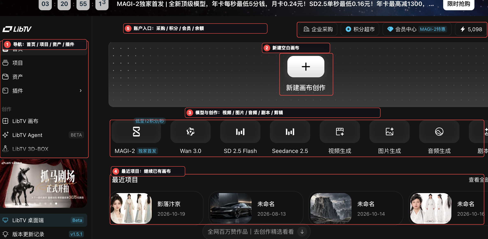
LibTV｜首页入口 · 界面示意：LibTV 首页入口第一天 / Token学院 · 平台、模型与工具入口 · 05/07 | 全课 18/54
LibTV｜空白画布
认识进入后的空白画布。
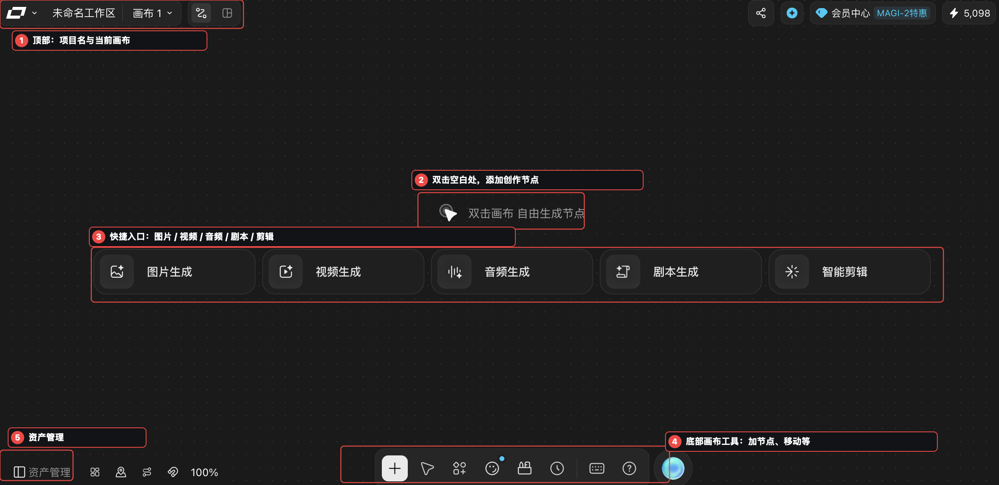
LibTV｜空白画布 · 界面示意：LibTV 空白画布第一天 / Token学院 · 平台、模型与工具入口 · 06/07 | 全课 19/54
LibTV｜添加节点菜单
画布中可查看添加节点菜单。
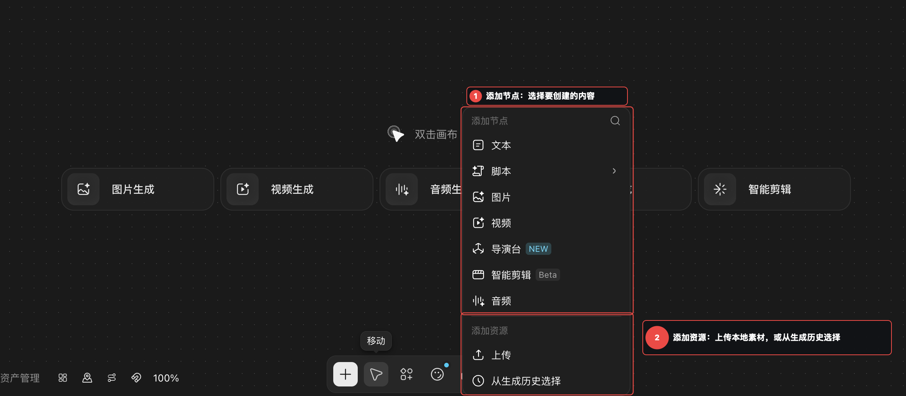
LibTV｜添加节点菜单 · 界面示意：LibTV 添加节点菜单第一天 / Token学院 · 平台、模型与工具入口 · 07/07 | 全课 20/54
小云雀｜首页入口与功能
小云雀首页入口和功能位置示意。
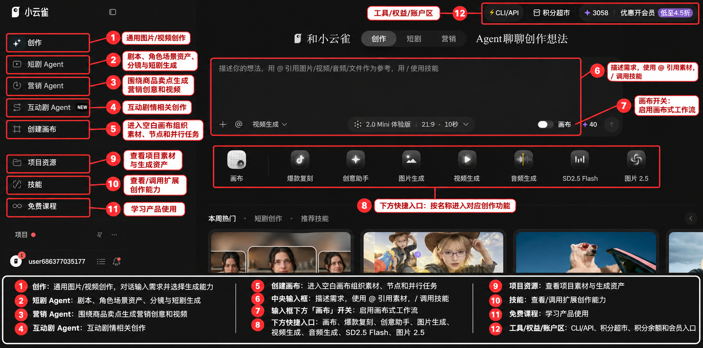
小云雀｜首页入口与功能 · 课堂界面示意；具体界面以实际入口为准。第一天 / Token学院 · 七项提示词 · 01/05 | 全课 21/54
七项提示词｜七个问题形成完整镜头
七项内容从“谁”到“怎样呈现”逐层描述同一镜头。它们帮助模型理解画面，也帮助学生检查要求是否缺项。
主体
画面里是谁
动作与表演
如何开始、变化、结束
场景与环境
在哪里、有什么环境
镜头语言
观众从哪里看、镜头如何动
时间与节奏
多久、何时发生关键变化
光影与色调
光从哪里来、色彩如何
风格与质感
画面整体是什么感觉
声音按需补充；无声镜头可明确无声或后期处理。负面约束也按需检查。
七项不是孤立标签，要共同描述同一镜头。
七项提示词｜主体、动作与场景先确定画面中的对象，再说清对象如何变化、身处什么环境。
- 主体：人数、身份、外观锚点和对应资产。
- 动作与表演：起点、过程、终点、情绪与节奏。
- 场景与环境：地点、时间、天气、关键陈设。
这三项回答：谁、做什么、在哪里。
七项提示词｜镜头、时间、光色与风格接着描述观众如何看到动作，以及画面在时间和视觉上的呈现。
- 镜头语言：景别、机位、构图、运镜与对焦对象。
- 时间与节奏：总时长、关键动作的发生时间。
- 光影与色调：光源方向、软硬、色温或对比。
- 风格与质感：和已确认资产保持一致。
镜头、时间和视觉气质共同决定观众怎样感受这一段。
全能参考｜7+1 提示词框结构结构示意帮助核对七项和声音栏。
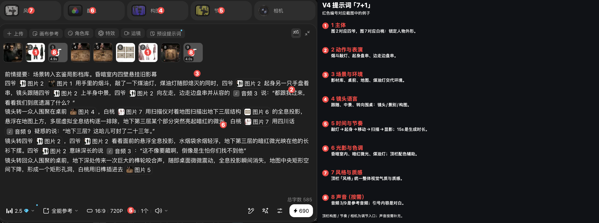
全能参考｜7+1 提示词框结构 · 七项提示词加声音的结构示意。 全能参考｜提示词框结构示意这张结构图用于识别提示词框的组成。
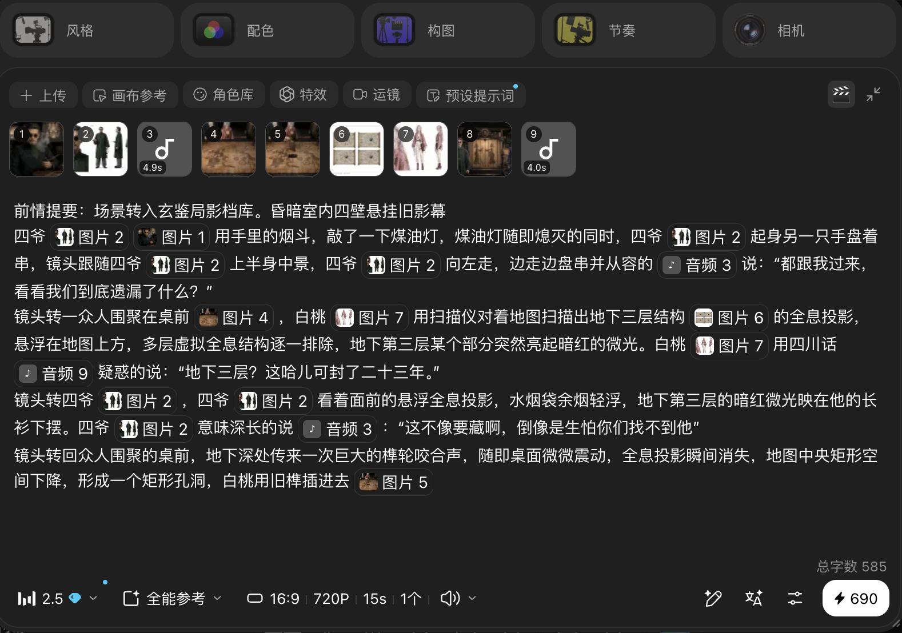
全能参考｜提示词框结构示意 · 提示词框结构示意，不是关东煮案例。 全能参考｜手写结构示意手写图展示提示词结构的另一种示意。
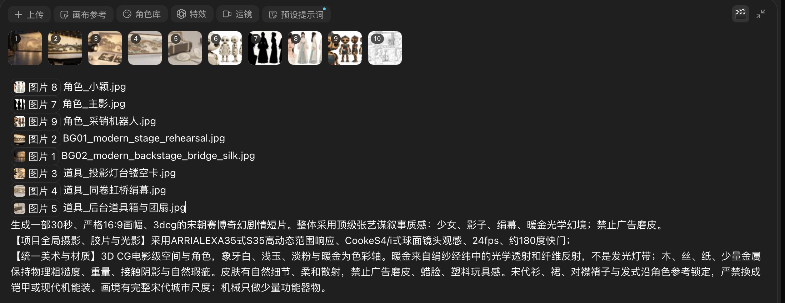
全能参考｜手写结构示意 · 结构示意。 七项提示词｜完整示例拆解
跟着文本找出七项内容；示例供讲解，不要求背诵。 参考女主定妆图和雨夜楼道图，保持人物短发、米色风衣及门边信封外观不变。雨夜，老楼道，声控灯忽明忽暗。女主停在门口，先看向信封，停顿后慢慢伸出右手拿起信封，读到内容时眼神由迟疑变为惊讶，最后压住情绪停住。全段 5 秒，前 2 秒基本静止，后面缓慢完成伸手和抬眼。中近景略仰拍，镜头由胸口位置缓慢推到面部特写，焦点最后落在眼睛。整体冷蓝色，右侧有一束偏暖的柔侧光，延续参考图的写实风格和浅景深。声音按需：保留轻微雨声和纸张摩擦声；对白不生成，后期配。
七项提示词｜负面约束按需检查
针对已经发现的问题，写具体要避免的结果；不要用禁词堆替代七项。 例如：不要换脸、不要多出人物、不要多手指、不要让信封消失、不要自行切镜。
第一天 / Token学院 · 七项提示词 · 02/05 | 全课 22/54
完整提示词示范｜豆包基础指令
先让豆包把简单要求整理成草稿，再检查人物、剧情、动作和镜头信息。
将输出作为提示词草稿，核对角色与剧情，再进入豆包 Seedance 2.0 Fast。剧本不是直接交给视频模型的替代品。
豆包基础指令 · 完整可复制请根据下面这段剧本，整理一条适用于 Seedance 2.0 的视频提示词，保留主要事件和原台词，不要增加剧情。输出后请单独列出还缺哪些人物、场景、动作或镜头信息。剧本：〔粘贴自己选的片段〕
第一天 / Token学院 · 七项提示词 · 03/05 | 全课 23/54
完整提示词示范｜豆包专业指令
专业指令要求逐项检查七项内容与声音需求，并保留仍需确认的问题。
信息不清时由学生补充或标记，不让工具自行决定剧情。
豆包专业指令 · 完整可复制请根据下面的剧本，写一条可直接用于 Seedance 2.0 的视频提示词。逐项检查并交代：主体（人数、外观锚点、引用的资产）、动作与表演（起点、过程、终点、情绪和节奏）、场景与环境（地点、时间、天气、关键陈设）、镜头语言（景别、机位、构图、运镜、对焦对象）、时间与节奏（总时长和关键动作发生的时间）、光影与色调（光源方向、软硬、色温或对比）、风格与质感（与已定资产保持一致）。需要声音时单列台词/旁白、声线表现、环境声、音效或音乐；不需要时标记无声或后期处理。不要添加原剧本没有的主要事件。最后附七项检查表和仍需确认的问题。剧本：〔粘贴〕；资产清单：〔列出人物图、场景图、道具图和各自用途〕
第一天 / Token学院 · 七项提示词 · 04/05 | 全课 24/54
七项提示词｜每项负责什么、漏写会怎样
七项都在描述同一镜头；漏项会让人物、动作、场景或画面表达出现偏差。
| 项目 | 要回答什么 | 漏写影响 |
|---|
| 主体 | 谁/什么、几个、外观锚点、引用哪份资产 | 外观变化、主体认错 |
| 动作与表演 | 起点、过程、终点、情绪、力度、视线 | 站着不动、动作跳变 |
| 场景与环境 | 地点、时间、天气、关键陈设 | 空间漂移、陈设不一致 |
| 镜头语言 | 景别、角度、构图、运镜、对焦 | 情绪重点和机位不清 |
| 时间与节奏 | 总时长、动作快慢、停顿、关键秒点 | 动作一闪而过或停滞 |
| 光影与色调 | 光源方向、软硬、冷暖、对比 | 光色不连贯、情绪不对 |
| 风格与质感 | 视觉风格、景深、材质，与资产一致 | 画风漂移 |
第一天 / Token学院 · 七项提示词 · 05/05 | 全课 25/54
七项提示词｜声音栏按需补充
声音单独放在声音栏；需要时说明内容，不需要时可写无声或后期处理。
- 对白/旁白：台词、由谁说、什么时候说；必要时写语气。
- 人物声音：按需写音色、语速、情绪，或提供参考音频。
- 环境声/动作音效：写明声音对应的动作或时刻；可注明后期添加。
- 背景音乐：说明需要/不需要及氛围，避免和对白抢在一起。
- 无声/后期：可注明本镜不生成对白和声音，声音后期制作。
第一天 / Token学院 · 导演小剧场 · 01/07 | 全课 26/54
导演小剧场｜活动目标
把提示词里的画面要求变成看得见的片场工作。
人物
学生演完后，能说清人物由谁来演。
视觉资产
说清人物和场景资产由谁准备。
机位与运动
说清机位和镜头运动由谁安排。
光线
说清光线由谁说明；再把这些要求放回视频提示词中检查。
第一天 / Token学院 · 导演小剧场 · 02/07 | 全课 27/54
导演的故事｜从戏的意图开始
导演先把这一镜的表达意图说清楚，再组织演员、摄影、灯光和服化道共同完成。
意图 → 站位
把观众应看到什么，落到人物在画面中的位置、左右前后、间距与朝向。
站位 → 动作
交代人物从哪里开始、动作如何发生、最后停在哪里，以及表演状态。
动作 → 镜头
说明景别、机位、构图、观察方向和镜头运动，让观众看清关键变化。
镜头 → 光线
说明光源位置、软硬、色温与氛围，让画面表达和戏的意图一致。
意图落到站位、动作、镜头和光线，才成为各岗位能执行的一镜要求。
第一天 / Token学院 · 导演小剧场 · 03/07 | 全课 28/54
导演小剧场｜岗位卡与拍摄单对照
讲义 0332–0363 对照表全文。
| 实拍环节 | 片场岗位／课堂角色 | AI 视频中由什么承担 | 提示词或参考内容 |
|---|
| 人物表演 | 演员：男主／女主／配角 | 由角色资产提供人物外观；由生成模型依据提示词表现动作、表情、视线和人物关系。 | 主体；动作与表演；人物在场景中的位置关系。 |
| 人物、服装、道具与场景准备 | 服化道 | 由前几天准备的人物、服装、道具和场景资产图提供视觉依据；生成时按用途引用相应素材。 | 主体、场景与环境、风格与质感；并说明人物图、道具图、场景图各自参考什么。 |
| 说戏与现场调度 | 导演 | 把这一镜的表达意图转成清楚的动作、站位、朝向和镜头要求，并检查生成结果是否符合预期。 | 组织提示词中的主体、动作与表演、场景关系、镜头语言、时间节奏、光影和风格等要求。 |
| 固定机位与构图 | 摄影机位一 | 用镜头提示词描述固定机位、景别、画面构图或正反打；需要时用故事板预先看构图。 | 镜头语言：景别、机位角度、构图、观察方向和对焦对象。 |
| 镜头运动 | 摄影机位二 | 用镜头提示词描述推、拉、摇、移、跟随或环绕；平台支持时可用参考视频辅助表达动作或运镜。 | 镜头语言中的运镜方向、速度和对焦对象；时间与节奏中的运动快慢。 |
| 光线安排 | 灯光师 | 通过提示词说明光源位置、软硬、色温和氛围；已有风格图时，可作为视觉参考。 | 光影与色调；风格与质感中的视觉气氛。 |
| 声音安排（按需） | 声音协助 | 按平台能力输入声音提示词或参考音频；也可以注明声音留到后期处理。 | 声音栏：对白、人物声音表现、环境声、动作音效或音乐；无声时说明处理方式。 |
第一天 / Token学院 · 导演小剧场 · 04/07 | 全课 29/54
导演小剧场｜A4 拍摄单要有什么
讲义 0364：人物站位要写清左右、前后、人物间距和移动方向。
本场片段
演员要求
人物站位和朝向
左右、前后、人物间距和移动方向。
动作顺序
镜头景别和运镜
光线氛围
声音需求
结束状态
第一天 / Token学院 · 导演小剧场 · 05/07 | 全课 30/54
导演小剧场｜小游戏流程（约 30 分钟）
讲义 0366–0369，小游戏约 30 分钟。
- 发牌认领
讲师发岗位胸牌，学生认领角色；讲师说明场景、服装和道具已经准备好。 - 导演说戏
导演拿拍摄单说戏：这一镜讲什么、观众应该看见谁、人物从哪里开始、最后到哪里。 - 岗位复述
演员复述动作顺序、站位、朝向和表演状态；摄影机位一说明固定构图、景别或正反打，摄影机位二说明镜头运动；灯光师说明光线安排；如有声音，声音协助说明声音何时出现。 - 排演
导演检查大家是否理解同一场戏，场记拍板，喊 Action，完成讲师准备的 15 秒示范戏。
第一天 / Token学院 · 导演小剧场 · 06/07 | 全课 31/54
导演小剧场｜吃饭戏现场说明
讲义 0373–0375：投影导演卡可在本页打开；浏览器按 F11 全屏，左右键翻页。
打开《吃饭戏》投影导演卡 ↗
现场角色
男主、女主（夫妻，分坐桌子两头）；打电话的人坐台下，不进入画面；摄影机位一、摄影机位二；灯光师、服化道、导演、场记。
现场物品
一张桌子、两把椅子、杯子或餐具、男主手机铃声和一个包（按静音时用）。
演后复盘
演完后按七项提示词与声音栏复盘。
现场发挥
女主最后一句台词由演女生的同学现场发挥，讲义不预设具体台词。
第一天 / Token学院 · 导演小剧场 · 07/07 | 全课 32/54
导演小剧场｜复盘
讲义 0370 复盘问题与 0372 要点。
复盘问题（0370）
分别找出七项内容在哪里出现；再指出声音栏、负面约束是否需要；说出若要写成视频提示词，哪些岗位的信息必须合在一起。
复盘要点（0372）
刚才各岗位完成的工作，合起来就是这一镜的拍摄要求。到了 AI 视频生成这一步，我们要把要求转换成模型能参考的素材和视频提示词：人物是谁、人物怎么行动、场景是什么、机位和镜头如何变化、光线是什么样。导演先把这一镜的表达意图说清楚，再组织演员、摄影、灯光和服化道共同完成。
第一天 / Token学院 · 下午两轮生成 + 课程 Skill · 01/12 | 全课 33/54
熊猫短剧 Skill｜能做什么
熊猫短剧是一套 AI 短剧创作与制作助手；本页内容适合第一次安装和使用的人。
- 项目创意、大纲和平台节奏规划
- 完整剧本写作、剧本诊断和台词精修
- 角色、场景、道具等视觉资产整理
- 场景导演会诊卡和 AI 视频分镜
- Seedance 2.0 等视频模型提示词
- 成片或粗剪的音乐、音效和声音设计
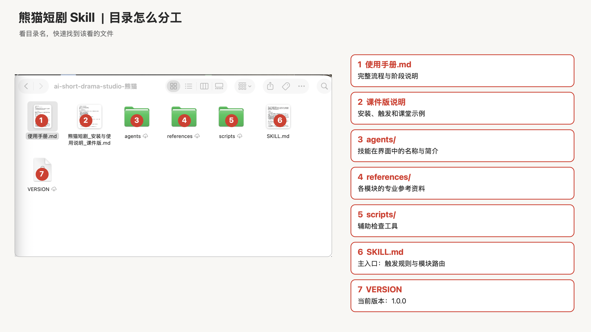
熊猫短剧 Skill 目录 · 目录与文件夹职责示意第一天 / Token学院 · 下午两轮生成 + 课程 Skill · 02/12 | 全课 34/54
熊猫短剧 Skill｜安装方法与检查位置
技能 ID：ai-short-drama-studio · 版本：1.0.0。解压技能压缩包，把完整技能文件夹放进个人技能目录，再检查目录层级。
- 解压压缩包，找到同时包含
SKILL.md、references、agents 的技能文件夹。 - 将整个文件夹复制到
~/.codex/skills/；若没有 skills 文件夹，先新建。~ 代表个人用户目录。 - 检查文件：
~/.codex/skills/ai-short-drama-studio-熊猫/SKILL.md。 - 不要只复制 SKILL.md，也不要多套一层文件夹；references 和 agents 要与 SKILL.md 同在技能目录。
- 重启 Codex，开新对话试用。
第一天 / Token学院 · 下午两轮生成 + 课程 Skill · 03/12 | 全课 35/54
熊猫短剧 Skill｜三种触发写法
每次请求都点名技能并说明具体任务；只说“写剧本”“做分镜”或“给 Seedance 提示词”不会触发。提到其他技能名也不会自动切换本技能。
- 使用熊猫短剧，帮我从一个故事灵感开发竖屏短剧项目。
- 使用 AI短剧工作室，帮我诊断下面这集剧本，先列问题和修改建议。
- $ai-short-drama-studio：把下面这场戏改成 AI 视频分镜。
第一天 / Token学院 · 下午两轮生成 + 课程 Skill · 04/12 | 全课 36/54
熊猫短剧 Skill｜按手头材料选起点
先判断自己现在有什么材料，再从对应阶段开始。
- 只有故事想法或题材 → 项目开发 / 故事大纲
- 已有大纲，没有完整剧本 → 完整剧本写作
- 已有剧本，想检查问题 → 剧本会诊
- 剧情已定，台词不自然 → 台词精修
- 剧本基本定稿，准备做图或视频 → 项目资产库
- 有定稿剧本和资产，准备生成视频 → AI 视频分镜，再做视频提示词
- 已有视频或粗剪 → 后期音乐与声音设计
完整链路：项目开发 → 剧本写作 → 剧本会诊与修改 → 台词精修 → 资产整理 →（关键场次可做导演会诊卡）→ AI 视频分镜 → 视频提示词 → 视频生成与粗剪 → 后期声音设计
第一天 / Token学院 · 下午两轮生成 + 课程 Skill · 05/12 | 全课 37/54
熊猫短剧 Skill｜可复制指令 A–B
把【】里的内容替换成自己的信息；没有的材料可以删掉或写“暂时没有”。
熊猫A · 完整可复制使用熊猫短剧，帮我从 0 到 1 开发一个短剧项目。题材/灵感：【写一句话】目标平台：【抖音/小红书/视频号/其他】希望的类型和情绪：【例如悬疑、爽感、温暖】请先给我项目设定、核心人物、故事大纲和平台节奏建议。
熊猫B · 完整可复制使用熊猫短剧，根据下面的项目设定和大纲写完整剧本。写作模式：【影视剧本/小说化/分集】目标平台和单集时长：【填写】项目设定与大纲：【粘贴材料】先按现有信息推进；缺少关键条件时再列出需要我补充的内容。
第一天 / Token学院 · 下午两轮生成 + 课程 Skill · 06/12 | 全课 38/54
熊猫短剧 Skill｜可复制指令 C–D
把【】里的内容替换成自己的信息；没有的材料可以删掉或写“暂时没有”。
熊猫C · 完整可复制使用熊猫短剧，请会诊下面的剧本。重点检查：人物动机、因果、节奏、冲突、结尾钩子。先列最重要的问题和修改建议，不要直接重写。剧本：【粘贴剧本】
熊猫D · 完整可复制使用熊猫短剧，只精修下面这场戏的对白，不改剧情和人物关系。角色关系/说话习惯：【填写】场景和当下目的：【填写】剧本：【粘贴场景】
第一天 / Token学院 · 下午两轮生成 + 课程 Skill · 07/12 | 全课 39/54
熊猫短剧 Skill｜可复制指令 E–F
把【】里的内容替换成自己的信息；没有的材料可以删掉或写“暂时没有”。
熊猫E · 完整可复制使用熊猫短剧，根据下面的定稿剧本建立项目资产库。请整理角色、场景、关键道具、视觉风格，并给参考图编号建立 @图N 映射。已有参考图：【说明或附图】剧本/项目资料：【粘贴材料】
熊猫F · 完整可复制使用熊猫短剧，根据定稿剧本和资产映射制作 AI 视频分镜。目标平台/画幅：【例如竖屏 9:16】目标视频模型：【Seedance/其他】剧本：【粘贴本场剧本】资产与 @图N 映射：【粘贴资产表】
第一天 / Token学院 · 下午两轮生成 + 课程 Skill · 08/12 | 全课 40/54
熊猫短剧 Skill｜可复制指令 G–H
把【】里的内容替换成自己的信息；没有的材料可以删掉或写“暂时没有”。
熊猫G · 完整可复制使用熊猫短剧，把下面的 AI 视频分镜转成 Seedance 2.0 可直接复制使用的提示词。画幅：【例如 9:16】每段时长：【例如 4–15 秒】参考素材编号：【列出 @图片/@视频/@音频编号；没有就写“暂无”】分镜：【粘贴分镜】
熊猫H · 完整可复制使用熊猫短剧，根据下面的粗剪信息设计后期音乐和声音。请给我 BGM 进出点、静默点、音效建议和可直接用于搜索或生成音乐的提示词。目标平台/是否商用：【填写】视频时长与时间轴：【粘贴时间轴或分段说明】
第一天 / Token学院 · 下午两轮生成 + 课程 Skill · 09/12 | 全课 41/54
熊猫短剧 Skill｜让结果更贴近需求
提问时带上当前阶段、已有材料、发布平台和不希望改动的内容。
- 你现在在哪一步，以及这次只想完成什么
- 已有剧本、大纲、设定或参考图
- 发布平台、画幅和目标时长
- 想保留的内容，以及不希望改动的部分
阶段结束时，Skill 会说明产出了什么、还缺什么，以及可以复制的下一步调用语。
一句话记住：先点名“熊猫短剧”或“AI短剧工作室”，再说清任务。
第一天 / Token学院 · 下午两轮生成 + 课程 Skill · 10/12 | 全课 42/54
熊猫短剧 Skill｜目录与文件职责
查看课程 Skill 的目录结构和文件夹职责。
熊猫短剧 Skill｜目录与文件职责 · 熊猫短剧 Skill 目录示意。
第一天 / Token学院 · 下午两轮生成 + 课程 Skill · 11/12 | 全课 43/54
下午两轮生成｜练习规则
两轮使用同一段剧本、同一组资产和同一画面目标，尽量保持画幅、时长相同。比较提示词流程如何变化。
第一轮
豆包基础指令整理提示词 → 检查 → 豆包 Seedance 2.0 Fast 生成
第二轮
豆包专业指令补齐七项 → 检查 → 同入口生成
两轮都保存输入、提示词和视频。平台和模型会影响结果，不能只凭一次生成归因提示词质量。
同一输入条件下比较流程，复盘具体偏差。
下午实操｜同一段戏、同一组资产
两轮使用同一段剧本、同一组视觉资产和同一个画面目标，尽量保持画幅和时长相同。 两轮都保存输入、提示词和视频。平台不同会影响结果，不能只凭一次生成归因提示词质量。
第一轮｜豆包基础指令整理提示词
先把片段告诉豆包，让它整理成 Seedance 2.0 视频提示词。 把输出当草稿；检查角色、剧情，再进入豆包里的 Seedance 2.0 Fast，上传同一组资产。
第二轮｜豆包专业指令补齐七项
逐项检查七项内容和声音需求；信息不清的地方由学生补充或标记。 同一组图片交给 Seedance 2.0 Fast，生成第二版并保存。
课程 Skill 跟做｜输入已有材料
选定剧本片段、对应分镜、分镜提示词和资产清单，交给熊猫短剧 Skill。 核对是否沿用原剧情与资产；信息不足时先标出，不自行补编。
课程 Skill 跟做｜回到平台生成
把 Skill 输出带回课堂指定入口，按入口要求使用已有参考素材。 生成并完整观看约 15–30 秒视频，保存提示词与结果，记录一项需要调整的地方。
第一天 / Token学院 · 下午两轮生成 + 课程 Skill · 12/12 | 全课 44/54
下午两轮生成｜课程 Skill 跟做
课程 Skill 是今天的重点：把已有剧本、分镜、分镜提示词与资产说明交给 Skill，检查输出后再回到生成平台。
- 选定已有剧本片段、对应分镜、分镜提示词和资产。
- 交给熊猫短剧 Skill 整理视频提示词。
- 检查是否沿用原剧情和资产，逐项核对七项与声音栏。
- 信息不足先标记，不自行补编。
- 把提示词带回课堂指定入口，上传同一组参考并生成。
- 完整观看，保存提示词和结果，记下一项待调整处。
小云雀一键流程不是必做轮次。
第一天 / Token学院 · 故事板 · 01/03 | 全课 45/54
故事板｜可复制提示词 0443
按故事顺序生成 4—6 格画面；保留人物、服装、场景和道具参考。
故事板提示词 0443 · 完整可复制请把下面的剧本整理成一张导演故事板，输出为按顺序排列的 4—6 格可视化画面。每格只表现一个主要画面，写明人物、位置、可见动作、观众看到的景别和画面变化。沿用我提供的人物、服装、场景和道具参考；保持人物外观一致，不添加剧本没有的主要事件。故事信息不足时先列问题，不要替我确定剧情。剧本：〔粘贴自己的片段〕。参考素材：〔列出每张图负责的内容〕。
第一天 / Token学院 · 故事板 · 02/03 | 全课 46/54
故事板｜可复制提示词 0444
课堂备用版，强调格间状态衔接；按需采用。
故事板提示词 0444 · 完整可复制请只做多格可视化故事板，不要做九宫格，也不要写成文字分镜表。请把下面的剧本整理成一张导演故事板，按故事顺序输出 4—6 格可视化画面。格数按关键状态变化决定，不要固定成 9 格。每格只表现一个观众能看见的主要画面变化；写明人物、位置与朝向、可见动作、景别、这一格里什么变了。沿用我提供的人物、服装、场景和道具参考，保持人物外观一致，不添加剧本没有的主要事件。相邻两格要能接上：上一格结束时的状态，就是下一格开始的状态。故事信息不足时先列问题，不要替我确定剧情。剧本：〔粘贴自己的片段〕；参考素材：〔列出每张图负责什么〕；画幅：〔例如 9:16 或 16:9〕。
第一天 / Token学院 · 故事板 · 03/03 | 全课 47/54
故事板｜学生自查
把故事板与剧本、资产和生成视频对照，记录一个差异。
- 故事板和剧本一致吗？
- 人物、场景、道具和资产一致吗？
- 每格是观众能看到的画面吗？
- 关键动作或场景有没有出现？
- 脑海里想的、但剧本没有写出来的内容是什么？
故事板｜把脑海里的画面看见故事板按顺序呈现主要人物、地点、动作和画面变化，帮助对照剧本、资产与视频。它是预览和沟通材料。
多格故事板
按故事顺序展示关键画面；第一天做 4–6 格。
关键帧
视频生成中用于明确开始、结束或转折状态的图片；今天建立概念。
故事板不等同视频提示词，也不保证模型最终完全照做。
先看清剧本要表达什么，再与生成视频比对差异。
故事板｜它与关键帧的区别
多格故事板按顺序排出关键画面；关键帧用于明确开始、结束或转折状态。 故事板是预览和沟通材料，不等于视频提示词，也不保证模型最终完全照做。
故事板｜4—6 格练习
把自己的剧本和已有资产整理成按故事顺序排列的 4—6 格可视化画面。 每格一个主要画面，检查人物、服装、场景、道具是否一致；删去工具擅自增加的剧情。
故事板｜生成并检查用自己的剧本和已有资产生成可视化故事板，重点检查忠实度与连续性。
- 输入剧本和人物、场景、道具参考。
- 按故事顺序生成 4–6 格，每格一个可见的主要画面。
- 核对人物、服装、场景、道具是否与资产一致。
- 删去工具擅自增加的剧情。
- 与视频并排比较，记录一个差异。
故事板｜参考提示词结构故事板参考图用于辅助课堂操作理解。
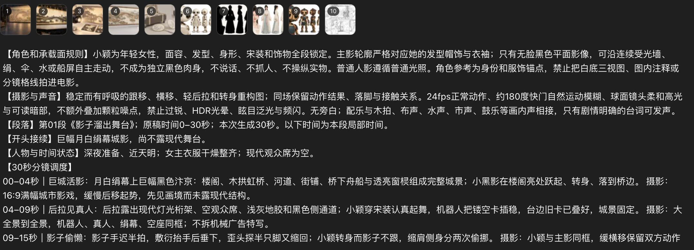
故事板｜参考提示词结构 · 故事板参考提示词图。 第一天 / Token学院 · 作业 · 01/01 | 全课 48/54
作业｜今天的收尾
把生成过程和故事板一起保存，带着一个具体问题进入第二天。
作业一：完成约 15–30 秒 AI 视频，使用自己的剧本和视觉资产；保存生成方式、模型/平台、七项提示词、声音栏处理方式和结果。
作业二：完成对应多格故事板，标出人物、位置、动作和画面变化；圈出一个目前最想解决的问题。
今天的目标不是每个人都做出完美视频，而是能说明选了什么方式、给了模型哪些参考、提示词交代什么、结果哪里不同。
作业｜视频与对应故事板完成一段短视频与对应多格故事板，并保留生成过程信息，带着具体问题进入下一天。
- 视频约 15–30 秒，使用自己的剧本和前期视觉资产。
- 保存生成方式、模型/平台、七项提示词、声音处理方式和视频。
- 故事板对应剧本与视频，标出人物、位置、动作和画面变化。
- 圈出一个目前最想解决的问题。
今天练习的是说清选择、输入和结果偏差，不要求一次生成完美。
作业｜提交对应故事板
完成对应多格故事板，标出人物、位置、动作和画面变化。 圈出一个目前最想解决的问题，带入下一天。
作业｜保存生成过程信息
完成一段约 15–30 秒视频，保存生成方式、平台/模型、七项提示词、声音处理方式和结果。 使用自己的剧本和前期视觉资产。
第一天 / Token学院 · 材料区 · 01/06 | 全课 49/54
材料区｜关东煮与《饥饿》文本材料
课堂主线只链接到需要的材料；剧本、提示词和案例图集中在这里查看。
《饥饿》剧本与提示词
关东煮带练备图
01 女主四视图03 店内环境04 道具05 图生定稿
关东煮三类示范视频与对应提示词，分别见文生、图生、全能参考页面。
第一天 / Token学院 · 材料区 · 02/06 | 全课 50/54
材料区｜《饥饿》可展示资产
以下是当前可展示或已确认的资产；状态按单张素材标明。
ST001 风格图 · 可展示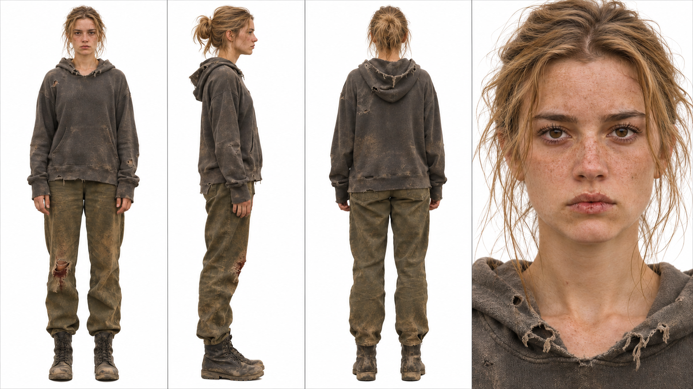
CH001 伯蒂设定图 · joy 已定：06:27 金发减眼圈版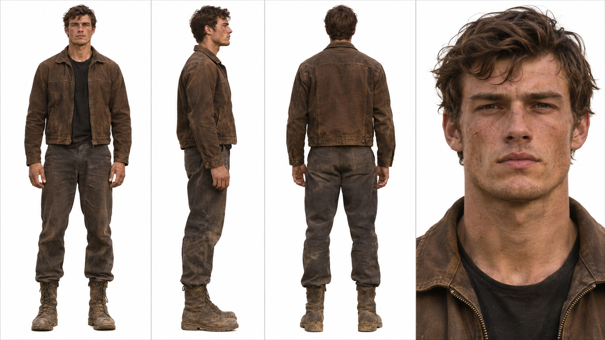
CH002 科尔设定图 · 已定SC001 枯草原野母版 · 可展示 资产状态分别记录；可展示不等于所有素材都已定稿。
第一天 / Token学院 · 材料区 · 03/06 | 全课 51/54
材料区｜SC002、SC003 试看
以下两张场景图仅供查看问题，均未定稿。
SC002 坡道 · 试看，未定稿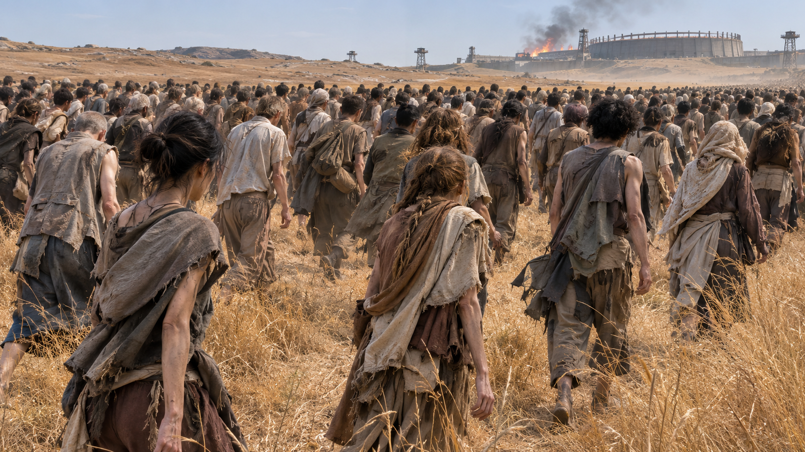
SC003 人潮 · 试看，未定稿 SC002 坡道有铁门框；SC003 人潮远处有围栏。
第一天 / Token学院 · 材料区 · 04/06 | 全课 52/54
材料区｜FF001–FF004 首帧试看
以下四张首帧仍是旧女主，仅供查看，均未定稿。
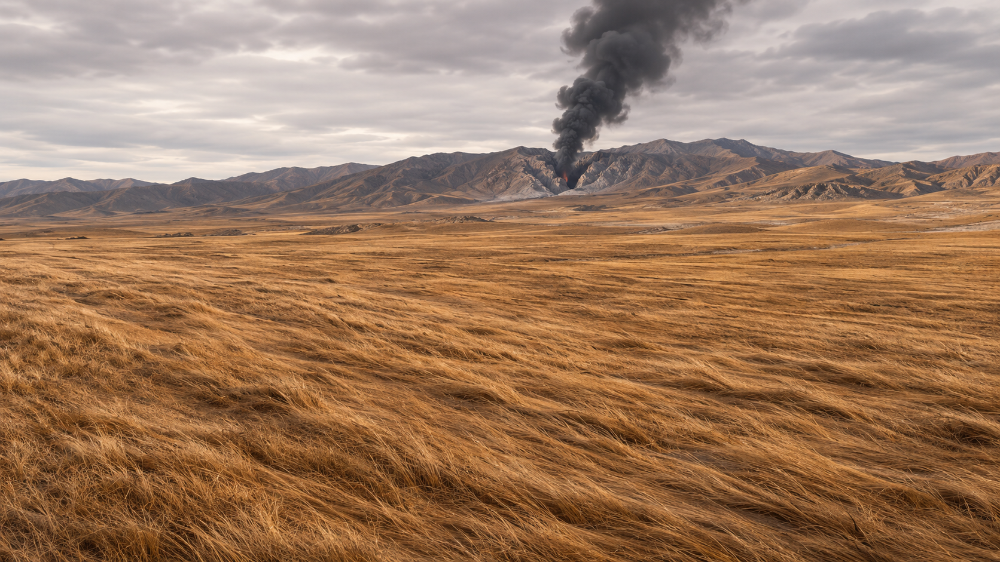
FF001 U01 首帧 · 试看，未定稿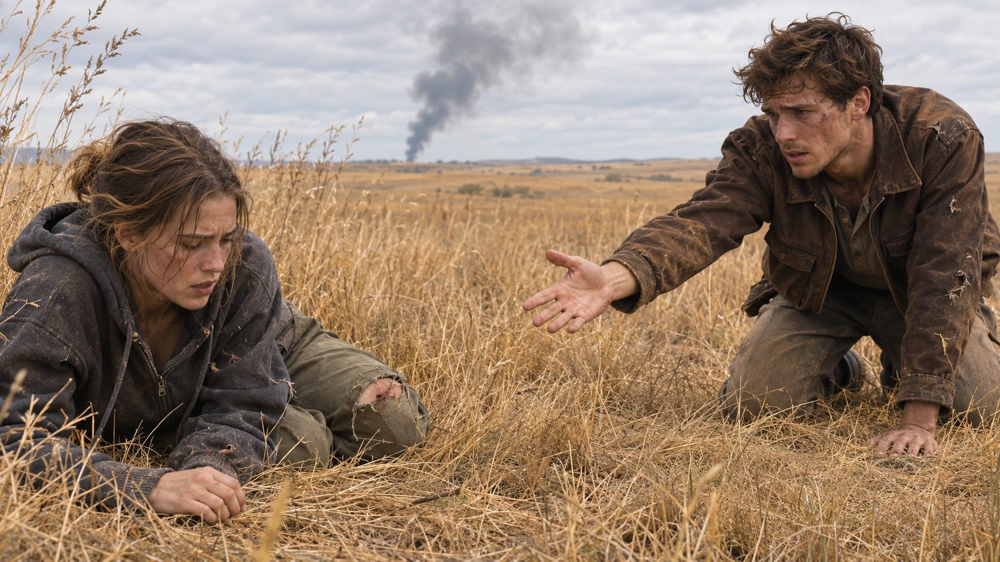
FF002 U02 首帧 · 试看，未定稿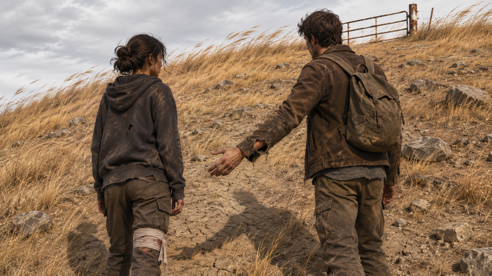
FF003 U04 首帧 · 有背包 · 试看，未定稿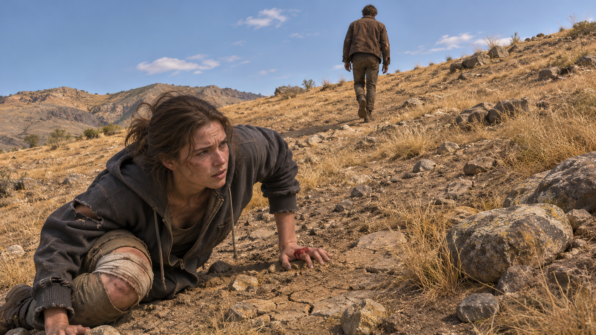
FF004 U06 首帧 · 有蓝天 · 试看，未定稿FF003 有背包；FF004 有蓝天。
第一天 / Token学院 · 材料区 · 05/06 | 全课 53/54
材料区｜《饥饿》故事板试看
该故事板仅供试看，不是定稿。
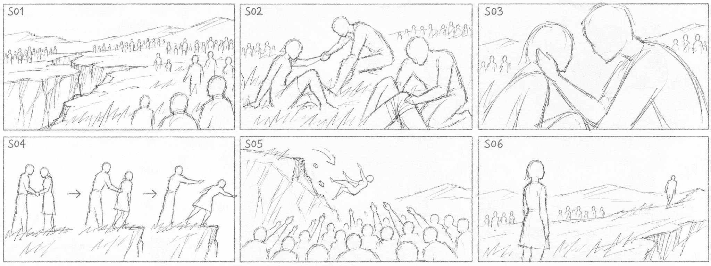
《饥饿》多格故事板 · 试看，未定稿第一天 / Token学院 · 材料区 · 06/06 | 全课 54/54
材料区｜《饥饿》U02 成片
U02 是材料区可播放的《饥饿》示范片段。
《饥饿》U02｜相依·她信他10 秒 · 480p · 16:9
《饥饿》材料集中在本区；课堂主线只提供跳转入口。